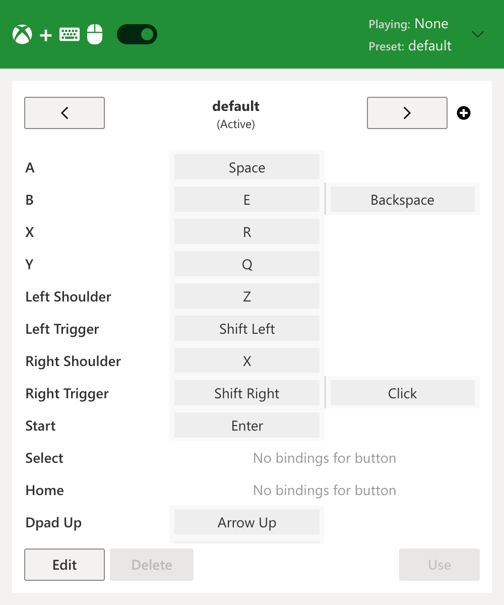
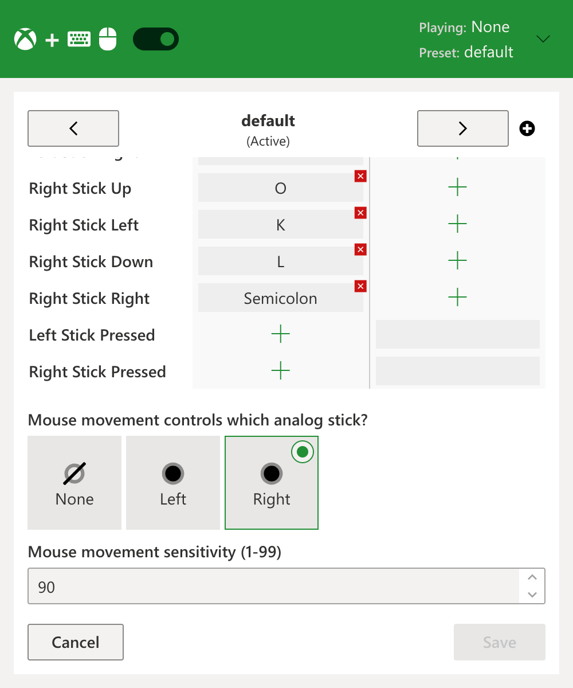

A browser extension to control any game on Xbox Cloud Gaming (Project xCloud) with a keyboard and mouse.
NOTE This is a fan project - it is not affiliated with Microsoft or Xbox in any way. All Microsoft, Xbox logos/icons/trademarks are copyright of their respective owners.
Download


The issue with xCloud
Microsoft's cloud gaming service Xbox Cloud Gaming (aka Project xCloud) lets you play your favorite Xbox games in the cloud, but it runs on physical Xbox consoles (not PCs) behind the scenes.
Since very few games on Xbox consoles support mouse and keyboard as first-class input devices, Microsoft chose to limit xCloud users to only using gamepad controllers to play (although maybe they will add PC servers eventually, but I wouldn't hold my breath).
So, if you don't have a controller or just prefer to use a mouse and keyboard you are out of luck!
But that all changes with this extension!
Features
 ✅ Works for every game
- Every game on xCloud is supported - regardless of whether or not it natively supports mouse and keyboard
✅ Multiple presets
- Manage multiple preset and custom configurations (e.g. create separate presets for "fighting games", "shooter", etc.)
- Bind multiple keyboard keys or mouse buttons to any controller button
✅ Quick enable/disable
- Easily disable the mouse/keyboard override and switch back to your controller whenever you feel like it with one click of the toggle
✅ Configurable sensitivity
- Control how sensitive you want mouse movement to be on a per-profile basis
- (Note you may also need to tweak the control sensitivity in the game options as well for optimal use)
How it works
This extension works by acting as a "virtual" controller. It listens for keyboard presses and (optionally) mouse movement and translates these into what appear as controller button presses and analog stick movements.
There is no added input delay introduced by this extension - all keyboard/mouse input is instantly translated into virtual controller input immediately by the extension without any extra software or steps.
Show your support
Like this extension? Why not buy me a coffee? I really appreciate it!